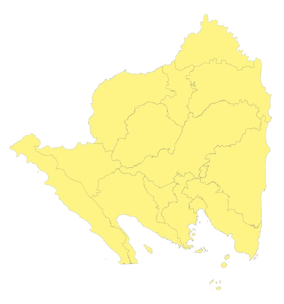

WebGIS - PROVINSI LAMPUNG
Persebaran Pasar Tradisional di Provinsi Lampung
Sumber Data
Edit Data
Data Tabel
Kritik & Saran
Info
Kritik & Saran
Nama
Alamat Email
Kritik & Saran
Kirim
Info Pembuat
Nama
Fairuz Alimah Ulayya Huda
NIM
23/514254/SV/22301
Kelas
A
GitHub
https://github.com/FairuzAlimah
LEGENDA